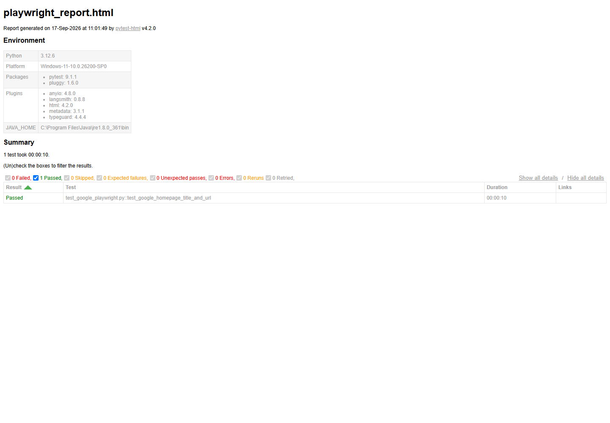

Overview
Playwright is a modern browser automation framework that supports Chromium, Firefox, and WebKit with a single API. It is widely used for end-to-end testing, UI validation, and repeatable browser workflows.
Day 1: Installation in VS Code with Python
Open the integrated terminal in VS Code and run:
py -m pip install playwrightIf py does not exist on your machine, use:
python -m pip install playwrightInstall browser binaries
The package is not enough. You also need browser binaries:
py -m playwright installVerify installation
py -m pip show playwright
py -m playwright --versionQuick smoke script
from playwright.sync_api import sync_playwright
with sync_playwright() as p:
browser = p.chromium.launch(headless=True)
page = browser.new_page()
page.goto("https://example.com")
print(page.title())
browser.close()Run it with:
py test_playwright.pyCommon setup issues
- If
pyis not recognized, usepythoninstead. - If browser launch fails, run
py -m playwright installagain. - If import fails, confirm VS Code is using the same Python interpreter where Playwright is installed.
Day 1 Summary
After installation and verification, you are ready to move from basic script execution to assertion-based testing and reporting.
Day 2: Assertions and HTML Report
Day 2 focuses on turning browser automation into a structured test flow with measurable assertions and a shareable report artifact.
Code is this
from playwright.sync_api import sync_playwright
def test_google_page():
with sync_playwright() as p:
browser = p.chromium.launch(headless=True)
page = browser.new_page()
page.goto("https://www.google.com", wait_until="domcontentloaded")
assert "Google" in page.title()
assert page.url.startswith("https://www.google.")
browser.close()Line by line description
from playwright.sync_api import sync_playwright: imports Playwright sync API.def test_google_page():: defines a pytest test function.with sync_playwright() as p:: starts Playwright context with automatic cleanup.browser = p.chromium.launch(headless=True): launches Chromium in headless mode.page = browser.new_page(): creates a new page tab.page.goto("https://www.google.com", wait_until="domcontentloaded"): opens Google and waits for DOM load.assert "Google" in page.title(): assertion line to verify title contains Google.assert page.url.startswith("https://www.google."): assertion line to verify URL starts with expected domain.browser.close(): closes browser and ends test flow.
Command used for report
py -m pytest -q test_google_playwright.py --html=playwright_report.html --self-contained-htmlWhat this validates
- Page title contains Google.
- Page URL starts with https://www.google.
Report screenshot reference
This screenshot is from the generated HTML report for Day 2:

How to view the report locally
start playwright_report.htmlProfessional takeaway
This two-day progression demonstrates a practical testing workflow: install and verify tooling, add meaningful assertions, and publish clear evidence of test execution through report artifacts.